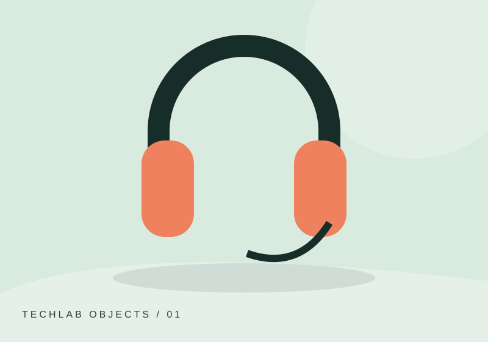

EFFECTS / EXPERIMENT 03
A softer transition.
TASK 03Let an image arrive gently, then disappear just as smoothly.
03 Interactive playground LIVE

The image is visible.
jQuery could not load. Check your connection and reload this page.